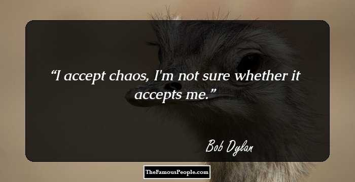

24th May, 1941 AD ,Duluth, Minnesota, United States
Resting place:
Minnesota
Pen name:
Robert Allen Zimmerman
Occupation:
Singer & Songwriter
Spouse:
Sara Lownds (m.1965-1977), Carolyn Dennis (m.1986-1992)
Children:
Jakob Dylan, Jesse Dylan, Desiree Gabrielle Dennis-Dylan, Anna Dylan, Sam Dylan, Maria Dylan
Relatives:
Father: Abram Zimmerman
Mother :Beatrice
Also Listed Ins:
Rock Singers
Nationality:
American , Famous American Men
Age:
76 Years
Awards:
1973 - Grammy Award for Album of the Year The Concert
1980 - Grammy Award for Best Rock Vocal Performance - Male
1990 - Grammy Award for Best Rock Performance by a Duo or Group with Vocal
- Grammy Lifetime Achievement Award
1995 - Grammy Award for Best Traditional Folk Album
1998 - Grammy Award for Album of the Year
1998 - Grammy Award for Best Contemporary Folk Album
1998 - Grammy Award for Best Rock Vocal Performance - Male
2002 - Grammy Award for Best Contemporary Folk Album
2007 - Grammy Award for Best Solo Rock Vocal Performance
2007 - Grammy Award for Best Contemporary Folk/Americana Album
2016 - Nobel Prize In Literature
Bob Dylan
One of the major figures of the folk and pop music movement in the United States, Bob Dylan is not just a singer or song-writer—he is an institution in himself. With a career spanning over five decades, Dylan has been the darling of generations of music lovers. Maybe that’s why he refuses to associate his name with the music of any particular generation. Breaking into the folk music scenario during the 1960s, he strived to make not just enjoyable, foot-tapping music, but endeavored to create social and political awareness through the lyrics of his songs. A rebel, he was not someone to conform to the existing norms of popular music of his era. Instead he chose to experiment with his music and lyrics and revolutionized the genre of pop as well as folk music. His works cover a wide range of musical genres—blues, country, gospel, folk, and rock and roll. The talented musician is also a multi-instrumentalist who can play the guitar, keyboards, and harmonica. He is a versatile singer though his biggest contribution to the world of music is considered to be his songwriting. His songs revolve around the issues facing the common man, be they social, political, or philosophical. The musician also loves to paint and his works have been displayed in major art galleries.
Childhood & Early Life
He was born as Robert Allen Zimmerman to Abram Zimmerman and Beatrice Stone in Minnesota where he was raised in a close-knit Jewish community. He loved music from a young age and spent hours listening to the radio.
He attended Hibbing High School and as a student played with many bands. He enrolled at the University of Minnesota in 1959. While in university he started performing at coffee houses and became active in the Dinkytown folk music circuit.
Career
He changed his name to “Bob Dylan” when he started performing. After quitting college in 1960 he went to New York City in 1961 in order to pursue a career in music. He started playing at clubs and explored the music scenario.
His eponymous debut album, ‘Bob Dylan’ was released in 1962. It contained folk songs and two of Dylan’s compositions. The album did not do well.
The next album he released, ‘The Freewheelin' Bob Dylan’ (1963) became a big hit in both the United States and the United Kingdom. The album was a combination of protest songs, love songs, and blues with social messages which greatly appealed to the audience and popularized the singer.
Over the 1960s he became immensely popular both as a song-writer and a singer. During this time he also actively became involved in the civil rights movement. One of his biggest hits, the single, ‘Like a Rolling Stone’ was released in 1965 which peaked at no. 1 in the UK charts.
In the 1970s he ventured into films and starred in the 1973 Western drama ‘Pat Garrett and Billy the Kid’. He also composed and sang several songs for the film. The film however was a failure at the box office.
He embarked on a year-long world tour in 1978 in which he was accompanied by an eight piece band and three backing singers. He performed concerts in Japan, Europe and the US, giving a total of 114 shows. This tour earned him more than $20 million.
Over the 1980s he took to touring more, and often collaborated with other musicians and bands. He toured extensively with Tom Petty and the Heartbreakers during 1986-87. Some of his biggest albums of the period include ‘Infidels’ (1983), ‘Knocked Out Loaded’ (1986) and ‘Oh Mercy’ (1989).
He continued performing throughout the 1990s though he was no longer one of the top musicians. But he surprised his dissenters by producing the album, ‘Time Out of Mind’ in 1997 which went on to win three Grammy Awards including Album of the Year award.
The prolific singer continued releasing albums, touring and performing stage shows well into the 2000s even though now he was in his sixties. Ever the music lover, he still keeps active and released the album ‘Tempest’ in 2012.
Mark Twain earned a large amount of money from his books which he invested in several business ventures.
However, many of the ventures failed, plunging him into financial difficulties. In order to stave off bankruptcy, he began writing more frequently in the early 1890s which affected the quality of his works.
Unable to cope with the increasing financial pressures, he filed for bankruptcy in 1894. His friend, the financier Henry Huttleston Rogers, came to Twain’s aid at this difficult time and helped him in re-establishing himself financially.
A highly popular person, he was also in great demand as a featured speaker, performing solo humorous talks and giving speeches in men’s clubs. A staunch anti-imperialist, he was made the vice-president of the American Anti-Imperialist League in 1901. He also supported civil rights and women’s suffrage.
Major Works
His album ‘Blonde on Blonde’ was one of his first major hits. It peaked at No. 9 on the Billboard 200 chart in the US and No. 3 in the UK. It was commercially very successful and went double platinum in the US.
His 1975 album ‘Blood on the Tracks’ is considered to be one of his greatest albums. It peaked at No. 1 in the US and is counted among the Rolling Stone's list of the 500 greatest albums of all time.
The album ‘Slow Train Coming’ out in 1979 peaked at No. 1 in Australia. The album explored the musician’s new found Christian faith, and stressed upon the relevance of Christian philosophy, drawing religious people to it. It went platinum in US and Canada.

Awards & Achievements
Bob Dylan is the proud recipient of several awards. He has won 11 Grammy Awards, the most recent one being Best Solo Rock Vocal Performance for ‘Someday Baby’ in 2007.
He won the Academy Award for Best Original Song for ‘Things Have Changed’ from ‘Wonder Boys’ in 2000.
He received the Presidential Medal of Freedom—the highest civilian award of the United States—in May 2012.
Bob Dylan won the 2016 Nobel Prize in Literature “for having created new poetic expressions within the great American song tradition”.
Personal Life & Legacy
He married Sara Lownds in 1965 and had four children with her. He also adopted Sara’s daughter from a previous relationship, Maria. The couple divorced in 1977.
He formed a relationship with the singer Carolyn Dennis which resulted in the birth of a daughter. He married Carolyn in 1986. This marriage too ended in divorce in 1992.